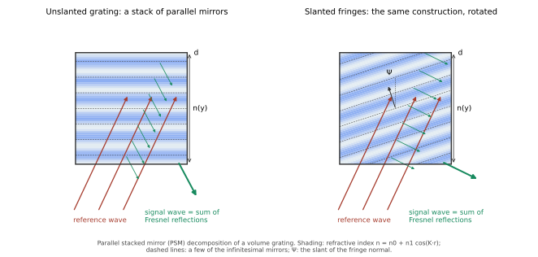

Prepared by Vivian Sureshkumar, 2026-09-07. For David Brotherton-Ratcliffe's review before anything is posted.
What this is. Two texts for English Wikipedia: a short section proposed for the existing article Volume hologram, and a standalone draft article, Parallel stacked mirror model, to be submitted through Articles for Creation. Every statement is sourced to the published papers of 2012–2015, the textbook, and independent works that cite them. Nothing from the 2026 manuscript appears — no PSM*, no benchmark, no new comparisons — until it has a DOI.
How it will be posted. Because we are the model's authors, Wikipedia's conflict-of-interest rules apply: the texts go in as talk-page requests reviewed by uninvolved editors, with a conflict-of-interest disclosure, and every comparative statement is attributed to the authors of the cited study rather than made in Wikipedia's voice.
What I would value your view on. The history paragraph (Rouard → Abèles → Heavens → chain matrix → PSM), the one-paragraph formulation, and whether the 2014 and 2015 comparisons are summarised fairly.
Kogelnik's coupled-wave theory retains only two waves inside the grating — the incident (reference) wave and one diffracted (signal) wave — and neglects the second derivatives of their amplitudes; it is exact only in the limit of vanishing modulation.[1] Rigorous coupled-wave analysis solves the same boundary-value problem numerically to any required accuracy by retaining an arbitrary number of diffracted orders, and is the usual reference against which two-wave models are tested.[2]
An alternative analytic description, the parallel stacked mirror (PSM) model, was introduced by David Brotherton-Ratcliffe in 2012.[3] It treats the grating as an infinite stack of infinitesimally thin parallel layers, applies the Fresnel reflection and transmission coefficients at every index discontinuity, and sums the resulting partial waves, which leads to a pair of coupled first-order differential equations of the same form as Kogelnik's but with different coefficients.[3][4] The construction can be regarded as a differential generalisation of the chain-matrix (characteristic-matrix) method used for stratified thin films, following the treatment of Fresnel reflection in thin films by Rouard.[3][4] The model has been extended to spatially multiplexed polychromatic gratings,[5] to gratings with finite absorption,[6] and to gratings with variable fringe contrast,[7] and is treated at length in a textbook on colour holography.[8] In a 2014 comparison against rigorous coupled-wave calculations, the model's authors reported that PSM gave a marginally more accurate description of lossless reflection gratings, particularly of the sideband structure, while Kogelnik's theory was the more accurate for transmission gratings.[9]
== Analytic models of diffraction ==
<!-- Proposed as a new section of [[Volume hologram]], to follow the existing "Theory" section.
Submitted via {{edit COI}} on the talk page; the requester is a co-author of the model's originator
and does not edit the article directly. Every sentence is sourced to published work; nothing from
unpublished manuscripts is included. British English per the article's existing usage. -->
Kogelnik's coupled-wave theory retains only two waves inside the grating — the incident (reference) wave and one diffracted (signal) wave — and neglects the second derivatives of their amplitudes; it is exact only in the limit of vanishing modulation.<ref name="kogelnik1969">{{cite journal |last=Kogelnik |first=H. |title=Coupled wave theory for thick hologram gratings |journal=Bell System Technical Journal |volume=48 |issue=9 |pages=2909–2947 |year=1969 |doi=10.1002/j.1538-7305.1969.tb01198.x}}</ref> [[Rigorous coupled-wave analysis]] solves the same boundary-value problem numerically to any required accuracy by retaining an arbitrary number of diffracted orders, and is the usual reference against which two-wave models are tested.<ref name="moharam1981">{{cite journal |last1=Moharam |first1=M. G. |last2=Gaylord |first2=T. K. |title=Rigorous coupled-wave analysis of planar-grating diffraction |journal=Journal of the Optical Society of America |volume=71 |issue=7 |pages=811–818 |year=1981 |doi=10.1364/JOSA.71.000811}}</ref>
An alternative analytic description, the '''parallel stacked mirror''' (PSM) model, was introduced by David Brotherton-Ratcliffe in 2012.<ref name="br2012jmo">{{cite journal |last=Brotherton-Ratcliffe |first=D. |title=A treatment of the general volume holographic grating as an array of parallel stacked mirrors |journal=Journal of Modern Optics |volume=59 |issue=13 |pages=1113–1132 |year=2012 |doi=10.1080/09500340.2012.695405}}</ref> It treats the grating as an infinite stack of infinitesimally thin parallel layers, applies the [[Fresnel equations|Fresnel]] reflection and transmission coefficients at every index discontinuity, and sums the resulting partial waves, which leads to a pair of coupled first-order differential equations of the same form as Kogelnik's but with different coefficients.<ref name="br2012jmo"/><ref name="br2013intech">{{cite book |last=Brotherton-Ratcliffe |first=D. |chapter=Understanding diffraction in volume gratings and holograms |title=Holography – Basic Principles and Contemporary Applications |editor-first=E. |editor-last=Mihaylova |publisher=IntechOpen |year=2013 |doi=10.5772/53413}}</ref> The construction can be regarded as a differential generalisation of the chain-matrix (characteristic-matrix) method used for stratified thin films, following the treatment of Fresnel reflection in thin films by Rouard.<ref name="br2012jmo"/><ref name="br2013intech"/> The model has been extended to spatially multiplexed polychromatic gratings,<ref name="br2012ao">{{cite journal |last=Brotherton-Ratcliffe |first=D. |title=Analytical treatment of the polychromatic spatially multiplexed volume holographic grating |journal=Applied Optics |volume=51 |issue=30 |pages=7188–7199 |year=2012 |doi=10.1364/AO.51.007188}}</ref> to gratings with finite absorption,<ref name="br2015ao1">{{cite journal |last1=Brotherton-Ratcliffe |first1=D. |last2=Osanlou |first2=A. |last3=Excell |first3=P. |title=Using the parallel stacked mirror model to analytically describe diffraction in the planar volume reflection grating with finite absorption |journal=Applied Optics |volume=54 |issue=12 |pages=3700–3707 |year=2015 |doi=10.1364/AO.54.003700}}</ref> and to gratings with variable fringe contrast,<ref name="br2015ao2">{{cite journal |last1=Brotherton-Ratcliffe |first1=D. |last2=Bjelkhagen |first2=H. |last3=Osanlou |first3=A. |last4=Excell |first4=P. |title=Diffraction in volume reflection gratings with variable fringe contrast |journal=Applied Optics |volume=54 |issue=16 |pages=5057–5064 |year=2015 |doi=10.1364/AO.54.005057}}</ref> and is treated at length in a textbook on colour holography.<ref name="bjelkhagen2013">{{cite book |last1=Bjelkhagen |first1=H. |last2=Brotherton-Ratcliffe |first2=D. |title=Ultra-Realistic Imaging: Advanced Techniques in Analogue and Digital Colour Holography |publisher=CRC Press |year=2013 |isbn=978-1-4398-2799-4}}</ref> In a 2014 comparison against rigorous coupled-wave calculations, the model's authors reported that PSM gave a marginally more accurate description of lossless reflection gratings, particularly of the sideband structure, while Kogelnik's theory was the more accurate for transmission gratings.<ref name="br2014oe">{{cite journal |last1=Brotherton-Ratcliffe |first1=D. |last2=Shi |first2=L. |last3=Osanlou |first3=A. |last4=Excell |first4=P. |title=Comparative study of the accuracy of the PSM and Kogelnik models of diffraction in reflection and transmission holographic gratings |journal=Optics Express |volume=22 |issue=26 |pages=32384–32405 |year=2014 |doi=10.1364/OE.22.032384}}</ref>
<!-- Optional final sentence, to be added ONLY after reading the two works in full and confirming they discuss the model beyond a citation:
The model has been discussed in reviews of holographic optical elements for automotive displays and of diffractive optics.<ref>Blanche et al. 2018 (SPIE)</ref><ref>Zhang et al. 2023, Photonics Insights</ref> -->
The parallel stacked mirror model (PSM model) is an analytic description of light diffraction in thick (volume) holographic gratings in which the periodic variation of refractive index is treated as an infinite stack of infinitesimally thin parallel mirrors. Introduced by David Brotherton-Ratcliffe in 2012,[1] it is an alternative to the coupled-wave theory of Herwig Kogelnik, with which it shares the two-wave approximation but from which it differs in its assumptions and coefficients.[2]
A volume hologram records an interference pattern as a periodic modulation of refractive index throughout the thickness of a recording material. When the material is many fringe spacings thick, diffraction is governed by the Bragg condition and only one diffracted wave carries significant power. Kogelnik's coupled-wave theory of 1969 describes this regime with two coupled first-order differential equations for the amplitudes of the incident and diffracted waves, obtained by neglecting all other orders and the second derivatives of the amplitudes.[3] Rigorous coupled-wave analysis, introduced by Moharam and Gaylord in 1981, retains an arbitrary number of orders and provides numerical solutions of any required accuracy at the cost of the closed-form expressions that make the two-wave theories useful in design.[4]
A different tradition treats a stratified medium as a sequence of interfaces. Rouard in 1937 analysed the optical properties of thin metallic films by summing Fresnel reflections,[5] and the characteristic-matrix (chain-matrix) method of Abelès and Heavens describes multilayer thin-film stacks by multiplying the transfer matrices of the individual layers.[6][7] Chain-matrix methods have also been applied directly to dielectric reflection gratings.[8]

The model decomposes the grating into an infinite series of parallel, infinitesimally thin dielectric layers whose refractive index follows the recorded fringe pattern. At each boundary between adjacent layers the classical Fresnel amplitude coefficients of transmission and reflection are applied. A reference wave illuminating the grating therefore generates an infinite number of secondary reflected waves, and the diffracted wave is their sum.[1][2] Writing the recurrence relations between the fields at successive layers and letting the layer thickness tend to zero produces a pair of coupled first-order differential equations for the reference and signal amplitudes. These have the same form as Kogelnik's equations but with coefficients that differ away from Bragg resonance; at exact resonance the two theories coincide.[1] In this sense the model is a differential generalisation of the chain-matrix method.[1][2] Because it is built from Fresnel coefficients, the model treats the p (π) polarisation with a factor that follows directly from the Fresnel reflection coefficient for that polarisation, which its author has described as a simpler route than the corresponding derivation in coupled-wave theory.[2]
For the unslanted lossless reflection grating at normal incidence the model's two-wave equations are an exact solution of Maxwell's equations; away from that case the model, like Kogelnik's, is an approximation whose accuracy is assessed against rigorous numerical calculation.[9]
The original paper treated the general planar grating, including slanted fringes.[1] The model was generalised in the same year to N superposed gratings, giving an N-coupled-wave description of spatially multiplexed and polychromatic (full-colour) reflection holograms,[10][11] and later to reflection gratings with finite absorption, for which Kogelnik's upper limit on the efficiency of a purely absorbing reflection grating was shown to follow from the model as well,[12] and to gratings whose fringe contrast varies through the thickness.[13] The model is presented at textbook length, alongside Kogelnik's theory, in Ultra-Realistic Imaging.[14]
Both descriptions are two-wave theories that reduce to the same closed-form efficiencies at Bragg resonance, and both are exact in the limit of vanishing modulation. A 2014 study by the model's authors compared the two against rigorous coupled-wave calculations over a range of lossless gratings. It reported that for most reflection gratings the PSM model gave a marginally better estimate of the diffraction efficiency and a clearly better description of the sideband structure, whereas for transmission gratings Kogelnik's theory gave the better estimate and the better description of the sidebands.[9] A later study of absorbing reflection gratings found the model somewhat closer to rigorous results at low to moderate loss, particularly for gratings dominated by phase modulation, and the coupled-wave model marginally closer at high loss.[12]
The model has been cited in work on holographic optical elements for automotive head-up displays,[15] in a textbook on optical holography,[16] in a review of diffractive optical elements,[17] and in studies of curved holographic optical elements,[18] of volume holographic combiners for augmented reality,[19] and of acousto-optic diffraction.[20]
{{AfC submission|||ts=|u=|ns=118}}
<!-- Draft:Parallel stacked mirror model — for Articles for Creation.
Conflict-of-interest note for the reviewer: the submitter is a co-author, with the model's originator,
of a manuscript on this model (unpublished as of September 2026). Nothing from that manuscript is used
here; every statement is sourced to peer-reviewed publications from 2012–2015 and to independent works
that cite them. The submitter will not edit the article after acceptance except through talk-page
requests. ~900 words of body text. -->
The '''parallel stacked mirror model''' ('''PSM model''') is an analytic description of light [[diffraction]] in thick (volume) [[holographic grating]]s in which the periodic variation of refractive index is treated as an infinite stack of infinitesimally thin parallel mirrors. Introduced by David Brotherton-Ratcliffe in 2012,<ref name="br2012jmo">{{cite journal |last=Brotherton-Ratcliffe |first=D. |title=A treatment of the general volume holographic grating as an array of parallel stacked mirrors |journal=Journal of Modern Optics |volume=59 |issue=13 |pages=1113–1132 |year=2012 |doi=10.1080/09500340.2012.695405}}</ref> it is an alternative to the [[coupled mode theory|coupled-wave theory]] of [[Herwig Kogelnik]], with which it shares the two-wave approximation but from which it differs in its assumptions and coefficients.<ref name="br2013intech">{{cite book |last=Brotherton-Ratcliffe |first=D. |chapter=Understanding diffraction in volume gratings and holograms |title=Holography – Basic Principles and Contemporary Applications |editor-first=E. |editor-last=Mihaylova |publisher=IntechOpen |year=2013 |doi=10.5772/53413}}</ref>
== Background ==
A [[volume hologram]] records an interference pattern as a periodic modulation of refractive index throughout the thickness of a recording material. When the material is many fringe spacings thick, diffraction is governed by the [[Bragg's law|Bragg condition]] and only one diffracted wave carries significant power. Kogelnik's coupled-wave theory of 1969 describes this regime with two coupled first-order differential equations for the amplitudes of the incident and diffracted waves, obtained by neglecting all other orders and the second derivatives of the amplitudes.<ref name="kogelnik1969">{{cite journal |last=Kogelnik |first=H. |title=Coupled wave theory for thick hologram gratings |journal=Bell System Technical Journal |volume=48 |issue=9 |pages=2909–2947 |year=1969 |doi=10.1002/j.1538-7305.1969.tb01198.x}}</ref> Rigorous coupled-wave analysis, introduced by Moharam and Gaylord in 1981, retains an arbitrary number of orders and provides numerical solutions of any required accuracy at the cost of the closed-form expressions that make the two-wave theories useful in design.<ref name="moharam1981">{{cite journal |last1=Moharam |first1=M. G. |last2=Gaylord |first2=T. K. |title=Rigorous coupled-wave analysis of planar-grating diffraction |journal=Journal of the Optical Society of America |volume=71 |issue=7 |pages=811–818 |year=1981 |doi=10.1364/JOSA.71.000811}}</ref>
A different tradition treats a stratified medium as a sequence of interfaces. Rouard in 1937 analysed the optical properties of thin metallic films by summing Fresnel reflections,<ref name="rouard1937">{{cite journal |last=Rouard |first=M. P. |title=Études des propriétés optiques des lames métalliques très minces |journal=Annales de Physique |series=11 |volume=7 |pages=291–384 |year=1937 |language=fr}}</ref> and the characteristic-matrix (chain-matrix) method of Abelès and Heavens describes multilayer thin-film stacks by multiplying the transfer matrices of the individual layers.<ref name="abeles1950">{{cite journal |last=Abelès |first=F. |title=Recherches sur la propagation des ondes électromagnétiques sinusoïdales dans les milieux stratifiés: application aux couches minces |journal=Annales de Physique |volume=5 |pages=596–640 |year=1950 |language=fr}}</ref><ref name="heavens1960">{{cite journal |last=Heavens |first=O. S. |title=Optical properties of thin films |journal=Reports on Progress in Physics |volume=23 |pages=1–65 |year=1960 |doi=10.1088/0034-4885/23/1/301}}</ref> Chain-matrix methods have also been applied directly to dielectric reflection gratings.<ref name="moharam1982">{{cite journal |last1=Moharam |first1=M. G. |last2=Gaylord |first2=T. K. |title=Chain-matrix analysis of arbitrary-thickness dielectric reflection gratings |journal=Journal of the Optical Society of America |volume=72 |issue=2 |pages=187–190 |year=1982 |doi=10.1364/JOSA.72.000187}}</ref>
== Formulation ==
[[File:Parallel stacked mirror decomposition of a volume grating.svg|thumb|upright=1.4|The grating is decomposed into infinitesimally thin layers; at each change of index a small Fresnel reflection is generated, and the sum of these partial waves forms the diffracted (signal) wave. Right: the same decomposition for slanted fringes.]]
The model decomposes the grating into an infinite series of parallel, infinitesimally thin dielectric layers whose refractive index follows the recorded fringe pattern. At each boundary between adjacent layers the classical Fresnel amplitude coefficients of transmission and reflection are applied. A reference wave illuminating the grating therefore generates an infinite number of secondary reflected waves, and the diffracted wave is their sum.<ref name="br2012jmo"/><ref name="br2013intech"/> Writing the recurrence relations between the fields at successive layers and letting the layer thickness tend to zero produces a pair of coupled first-order differential equations for the reference and signal amplitudes. These have the same form as Kogelnik's equations but with coefficients that differ away from Bragg resonance; at exact resonance the two theories coincide.<ref name="br2012jmo"/> In this sense the model is a differential generalisation of the chain-matrix method.<ref name="br2012jmo"/><ref name="br2013intech"/> Because it is built from Fresnel coefficients, the model treats the ''p'' (π) polarisation with a factor that follows directly from the Fresnel reflection coefficient for that polarisation, which its author has described as a simpler route than the corresponding derivation in coupled-wave theory.<ref name="br2013intech"/>
For the unslanted lossless reflection grating at normal incidence the model's two-wave equations are an exact solution of Maxwell's equations; away from that case the model, like Kogelnik's, is an approximation whose accuracy is assessed against rigorous numerical calculation.<ref name="br2014oe">{{cite journal |last1=Brotherton-Ratcliffe |first1=D. |last2=Shi |first2=L. |last3=Osanlou |first3=A. |last4=Excell |first4=P. |title=Comparative study of the accuracy of the PSM and Kogelnik models of diffraction in reflection and transmission holographic gratings |journal=Optics Express |volume=22 |issue=26 |pages=32384–32405 |year=2014 |doi=10.1364/OE.22.032384}}</ref>
== Extensions ==
The original paper treated the general planar grating, including slanted fringes.<ref name="br2012jmo"/> The model was generalised in the same year to ''N'' superposed gratings, giving an ''N''-coupled-wave description of spatially multiplexed and polychromatic (full-colour) reflection holograms,<ref name="br2012ao">{{cite journal |last=Brotherton-Ratcliffe |first=D. |title=Analytical treatment of the polychromatic spatially multiplexed volume holographic grating |journal=Applied Optics |volume=51 |issue=30 |pages=7188–7199 |year=2012 |doi=10.1364/AO.51.007188}}</ref><ref name="br2013jpcs">{{cite journal |last=Brotherton-Ratcliffe |first=D. |title=A new type of coupled wave theory capable of analytically describing diffraction in polychromatic spatially multiplexed holographic gratings |journal=Journal of Physics: Conference Series |volume=415 |pages=012034 |year=2013 |doi=10.1088/1742-6596/415/1/012034}}</ref> and later to reflection gratings with finite absorption, for which Kogelnik's upper limit on the efficiency of a purely absorbing reflection grating was shown to follow from the model as well,<ref name="br2015ao1">{{cite journal |last1=Brotherton-Ratcliffe |first1=D. |last2=Osanlou |first2=A. |last3=Excell |first3=P. |title=Using the parallel stacked mirror model to analytically describe diffraction in the planar volume reflection grating with finite absorption |journal=Applied Optics |volume=54 |issue=12 |pages=3700–3707 |year=2015 |doi=10.1364/AO.54.003700}}</ref> and to gratings whose fringe contrast varies through the thickness.<ref name="br2015ao2">{{cite journal |last1=Brotherton-Ratcliffe |first1=D. |last2=Bjelkhagen |first2=H. |last3=Osanlou |first3=A. |last4=Excell |first4=P. |title=Diffraction in volume reflection gratings with variable fringe contrast |journal=Applied Optics |volume=54 |issue=16 |pages=5057–5064 |year=2015 |doi=10.1364/AO.54.005057}}</ref> The model is presented at textbook length, alongside Kogelnik's theory, in ''Ultra-Realistic Imaging''.<ref name="bjelkhagen2013">{{cite book |last1=Bjelkhagen |first1=H. |last2=Brotherton-Ratcliffe |first2=D. |title=Ultra-Realistic Imaging: Advanced Techniques in Analogue and Digital Colour Holography |publisher=CRC Press |year=2013 |isbn=978-1-4398-2799-4}}</ref>
== Comparison with coupled-wave theory ==
Both descriptions are two-wave theories that reduce to the same closed-form efficiencies at Bragg resonance, and both are exact in the limit of vanishing modulation. A 2014 study by the model's authors compared the two against rigorous coupled-wave calculations over a range of lossless gratings. It reported that for most reflection gratings the PSM model gave a marginally better estimate of the diffraction efficiency and a clearly better description of the sideband structure, whereas for transmission gratings Kogelnik's theory gave the better estimate and the better description of the sidebands.<ref name="br2014oe"/> A later study of absorbing reflection gratings found the model somewhat closer to rigorous results at low to moderate loss, particularly for gratings dominated by phase modulation, and the coupled-wave model marginally closer at high loss.<ref name="br2015ao1"/>
== Reception ==
<!-- Each clause below must be checked against the cited work before submission; keep only what the source actually says. -->
The model has been cited in work on holographic optical elements for automotive head-up displays,<ref name="blanche2018">{{cite conference |last1=Blanche |first1=P.-A. |display-authors=etal |title=Holography for automotive applications: from HUD to LIDAR |conference=SPIE Optical Engineering + Applications |year=2018}}</ref> in a textbook on optical holography,<ref name="blanche2020">{{cite book |last=Blanche |first=P.-A. |chapter=Introduction to holographic principles |title=Optical Holography: Materials, Theory and Applications |publisher=Elsevier |year=2020 |isbn=978-0-12-815467-0}}</ref> in a review of diffractive optical elements,<ref name="zhang2023">{{cite journal |last1=Zhang |first1=M. |display-authors=etal |title=Diffractive optical elements 75 years on: from micro-optics to metasurfaces |journal=Photonics Insights |volume=2 |issue=4 |year=2023}}</ref> and in studies of curved holographic optical elements,<ref name="graf2020">{{cite journal |last=Graf |first=T. |title=Curved holographic optical elements from a geometric view point |journal=Optical Engineering |volume=59 |year=2020}}</ref> of volume holographic combiners for augmented reality,<ref name="francardi2018">{{cite conference |last1=Francardi |first1=M. |display-authors=etal |title=Characterisation and optimisation of volume holographic optical elements (VHOEs) in AR combiners for ghost reduction |conference=SPIE Photonics Europe |year=2018}}</ref> and of acousto-optic diffraction.<ref name="balakshy2016">{{cite journal |last1=Balakshy |first1=V. I. |last2=Voloshin |first2=A. S. |title=Anisotropic acousto-optic interaction in tellurium crystal with acoustic walk-off |journal=Applied Optics |volume=55 |year=2016}}</ref>
== See also ==
* [[Volume hologram]]
* [[Holographic optical element]]
* [[Coupled mode theory]]
* [[Transfer-matrix method (optics)]]
* [[Rigorous coupled-wave analysis]]
== References ==
{{reflist}}
[[Category:Holography]]
[[Category:Diffraction]]
An original drawing (matplotlib), to be uploaded as “own work” under CC BY-SA 4.0. It is drawn from the concept, not traced from any published figure.
*2026-09-07. Every citation used in the wikitext files is listed with what has and has not been verified. Verify the UNTESTED rows (open the DOI, check pages/volume) before anything is posted.*
| # | Source | Used for | DOI / ID | Status |
|---|---|---|---|---|
| 1 | Brotherton-Ratcliffe, J. Mod. Opt. 59(13) 1113–1132 (2012) | origin, formulation | 10.1080/09500340.2012.695405 | VERIFIED 2026-09-07 (T&F landing page; Semantic Scholar: 13 citations) |
| 2 | Brotherton-Ratcliffe, Appl. Opt. 51(30) 7188–7199 (2012) | multiplexed/polychromatic extension | 10.1364/AO.51.007188 | volume/pages VERIFIED (paper ref 2, Optica listing); DOI pattern ASSUMED — open it |
| 3 | Brotherton-Ratcliffe, J. Phys. Conf. Ser. 415, 012034 (2013) | polychromatic coupled-wave theory | 10.1088/1742-6596/415/1/012034 | citation VERIFIED (paper ref 3); DOI ASSUMED |
| 4 | Brotherton-Ratcliffe, "Understanding diffraction in volume gratings and holograms", ch. 1 of *Holography – Basic Principles and Contemporary Applications*, E. Mihaylova ed., IntechOpen 2013 | definition quotes, chain-matrix lineage | 10.5772/53413 | VERIFIED 2026-09-07 (IntechOpen page; CC BY) |
| 5 | Bjelkhagen & Brotherton-Ratcliffe, *Ultra-Realistic Imaging*, CRC Press | textbook treatment (ch. 11–12) | ISBN 978-1-4398-2799-4 | ISBN VERIFIED (Amazon listing); year printed 2012 in the paper's ref 5 and 2013 on catalogue pages — **check the imprint page and use that year** |
| 6 | Brotherton-Ratcliffe, Shi, Osanlou, Excell, Opt. Express 22(26) 32384–32405 (2014) | the 2014 comparison (attributed) | 10.1364/OE.22.032384 | VERIFIED 2026-09-07 (DOI resolved via Semantic Scholar; 6 citations) |
| 7 | Brotherton-Ratcliffe, Osanlou, Excell, Appl. Opt. 54(12) 3700–3707 (2015) | finite absorption; Kogelnik limit | 10.1364/AO.54.003700 | VERIFIED 2026-09-07 (DOI resolved) |
| 8 | Brotherton-Ratcliffe, Bjelkhagen, Osanlou, Excell, Appl. Opt. 54(16) 5057–5064 (2015) | variable fringe contrast | 10.1364/AO.54.005057 | citation VERIFIED (paper ref 8, Optica listing); DOI ASSUMED |
| 9 | Kogelnik, Bell Syst. Tech. J. 48(9) 2909–2947 (1969) | two-wave theory | 10.1002/j.1538-7305.1969.tb01198.x | VERIFIED (standard) |
| 10 | Rouard, Ann. Phys. (Paris) sér. 11, 7, 291–384 (1937) | Fresnel-sum lineage | — | citation VERIFIED (paper ref 10, year corrected to 1937); note an older DOCX printed "1837" in error |
| 11 | Abelès, Ann. Phys. (Paris) 5, 596–640 (1950) | chain-matrix lineage | — | citation VERIFIED (paper ref 11) |
| 12 | Heavens, Rep. Prog. Phys. 23, 1–65 (1960) | chain-matrix lineage | 10.1088/0034-4885/23/1/301 | citation VERIFIED (paper ref 12); DOI ASSUMED |
| 13 | Moharam & Gaylord, J. Opt. Soc. Am. 72(2) 187–190 (1982) | chain-matrix gratings | 10.1364/JOSA.72.000187 | citation VERIFIED (paper ref 13); DOI ASSUMED |
| 14 | Moharam & Gaylord, J. Opt. Soc. Am. 71(7) 811–818 (1981) | RCWA | 10.1364/JOSA.71.000811 | VERIFIED (standard) |
| 15 | Blanche et al., "Holography for automotive applications: from HUD to LIDAR", SPIE Optical Engineering + Applications 2018 | reception | — | listed as citing #1 by Semantic Scholar (VERIFIED); **content and proceedings volume UNTESTED — read before citing** |
| 16 | Blanche (ed.), *Optical Holography: Materials, Theory and Applications*, Elsevier 2020, ch. 1 | reception (textbook) | ISBN 978-0-12-815467-0 | book VERIFIED; chapter cites #1 (Semantic Scholar); **depth of treatment UNTESTED — read before citing** |
| 17 | Zhang et al., "Diffractive optical elements 75 years on: from micro-optics to metasurfaces", Photonics Insights 2(4) 2023 | reception (review) | 10.3788/PI.2023.R09 (ASSUMED) | listed as citing #6 (VERIFIED); content UNTESTED |
| 18 | Graf, "Curved holographic optical elements from a geometric view point", Opt. Eng. 59 (2020) | reception | — | listed as citing #6 (VERIFIED); issue/pages UNTESTED |
| 19 | Francardi et al., "Characterisation and optimisation of VHOEs in AR combiners for ghost reduction", SPIE Photonics Europe 2018 | reception | — | listed as citing #6 (VERIFIED); UNTESTED |
| 20 | Balakshy & Voloshin, Appl. Opt. 55 (2016); Balakshy et al., Ultrasonics (2015) | reception (acousto-optics) | — | listed as citing #1 (VERIFIED); UNTESTED |
| 21 | Derevyanko et al., Optoelectron. Instrum. Data Process. (2021) | reception | — | listed as citing #6 (VERIFIED); UNTESTED; not used in the draft |
Rules applied: no statement rests on the unpublished 2026 manuscript; every comparison is attributed; the "Reception" section may be shortened to whatever the sources actually say once rows 15–20 have been read.
Files: section wikitext · draft wikitext · figure (SVG) · sources. The interactive explorer that accompanies the paper is a separate site.
{kind=link}